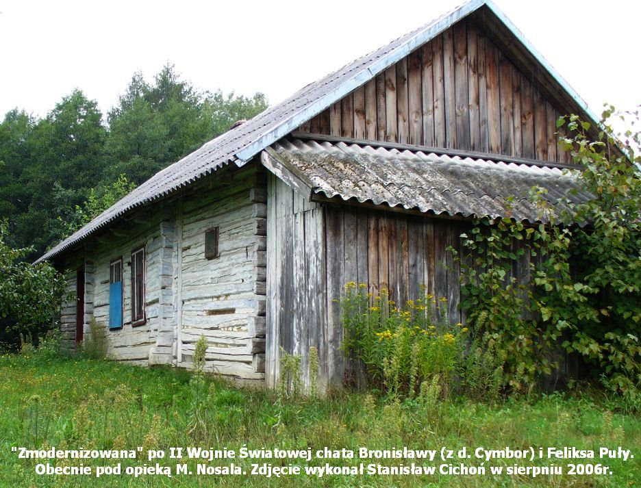
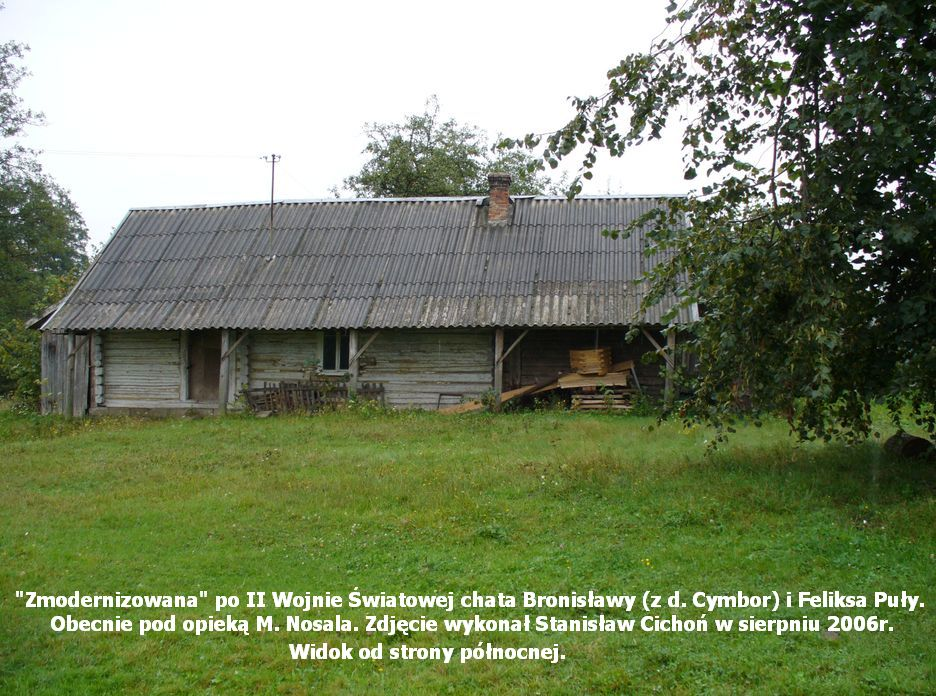
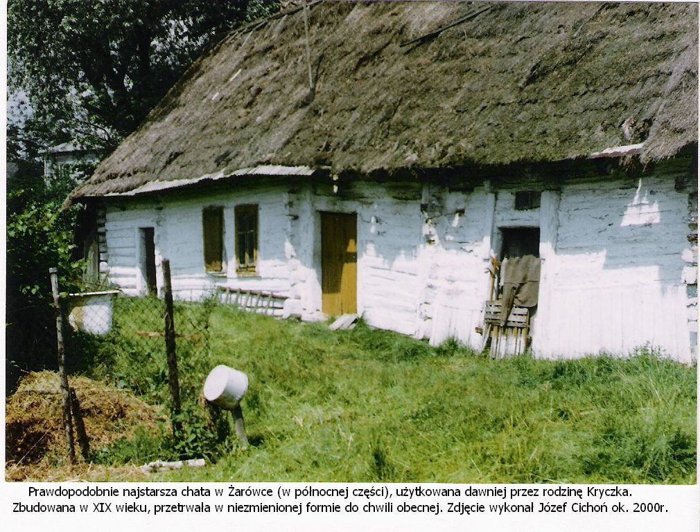

"Ponieważ za kilka lat znikną całkowicie drewniane stare budowle z naszej wioski to chociaż zachowajmy ich widok na fotografiach. Znalazłem w swojej fototece dwa ujęcia chaty moich dziadków (ze strony Mamy) oraz jedno zdjęcie chaty Kryczków (autor Józef Cichoń - mój brat stryjeczny)." Stanisław Cichoń
  